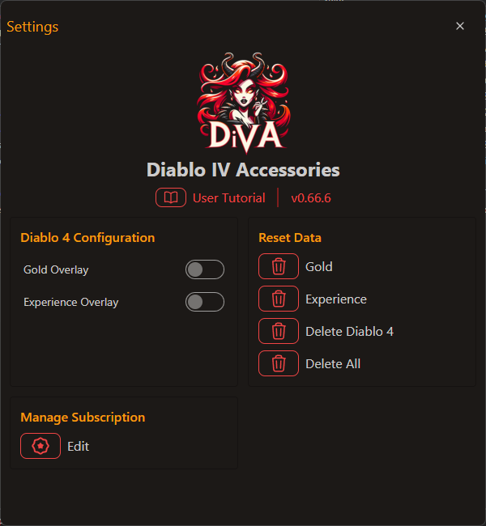

Screenshot of the Settings window.
The settings screen dynamically adjusts based on the game you are logged into. Here’s a breakdown of the functionality for managing settings across different games like Diablo II or Diablo IV:
Click the tutorial link to access this step-by-step guide on how to use the dIVa application and its features.
The current version of the application is displayed here, ensuring you're using the most up-to-date features and improvements
Access your subscription options and manage your plan or billing details through our trusted partner, Tebex.